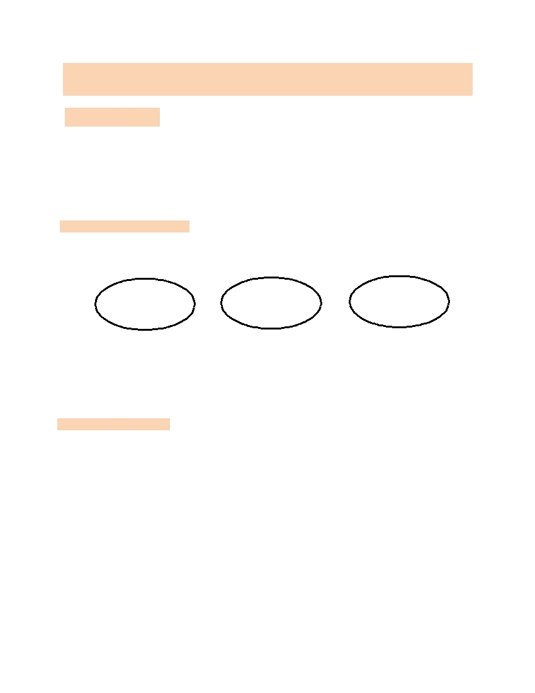
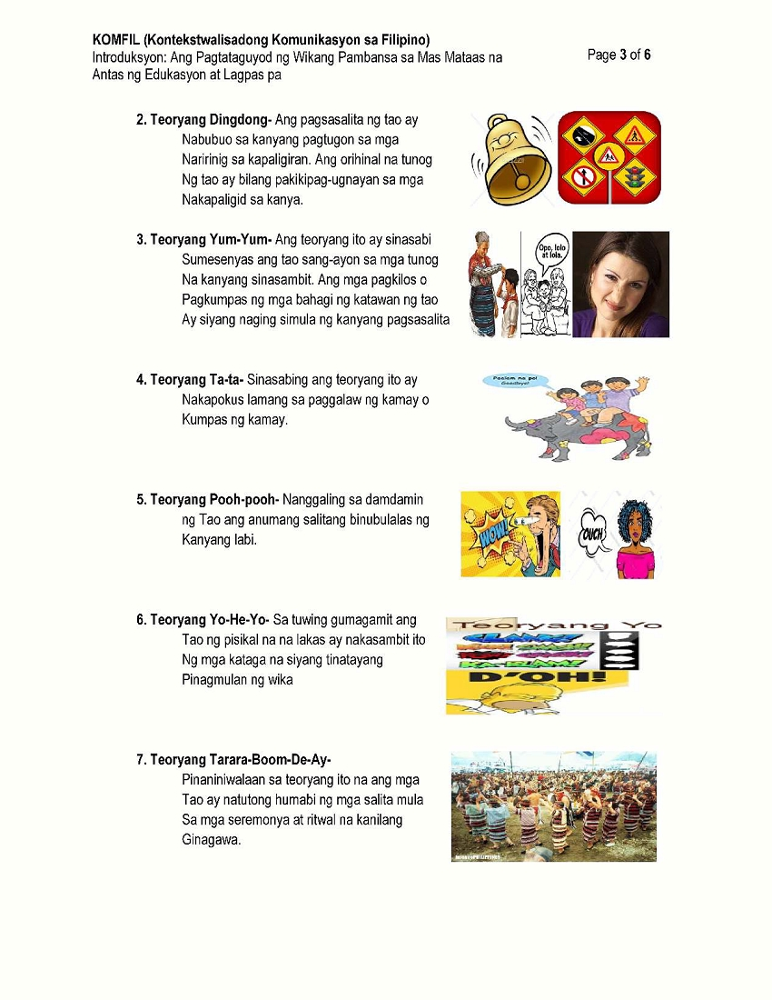
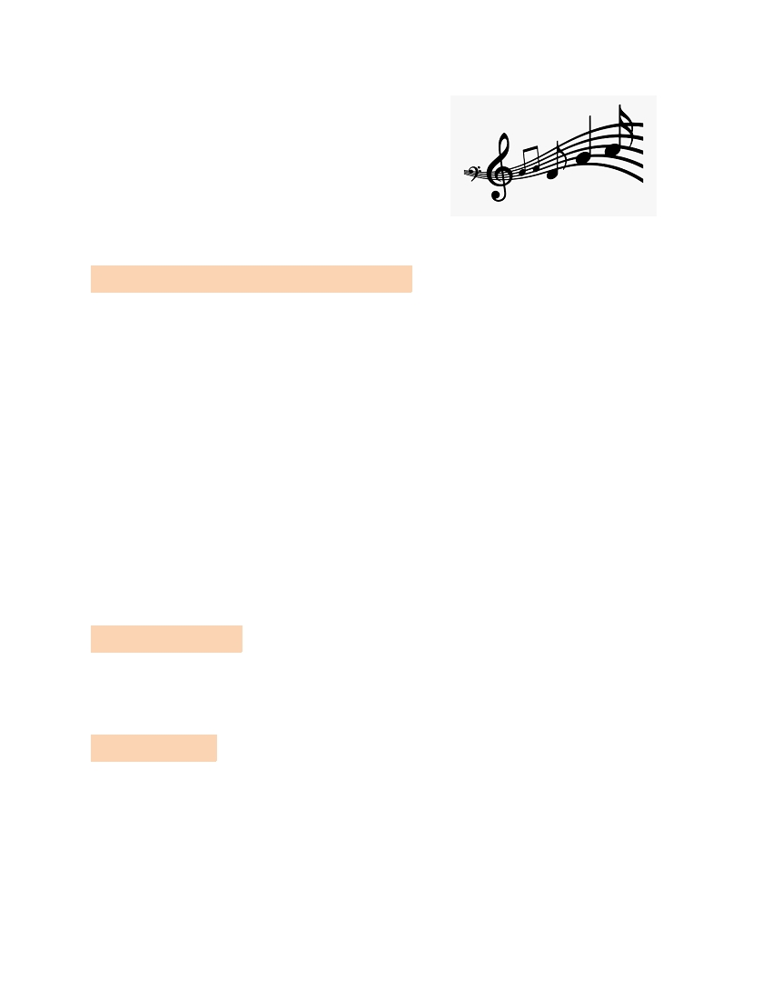
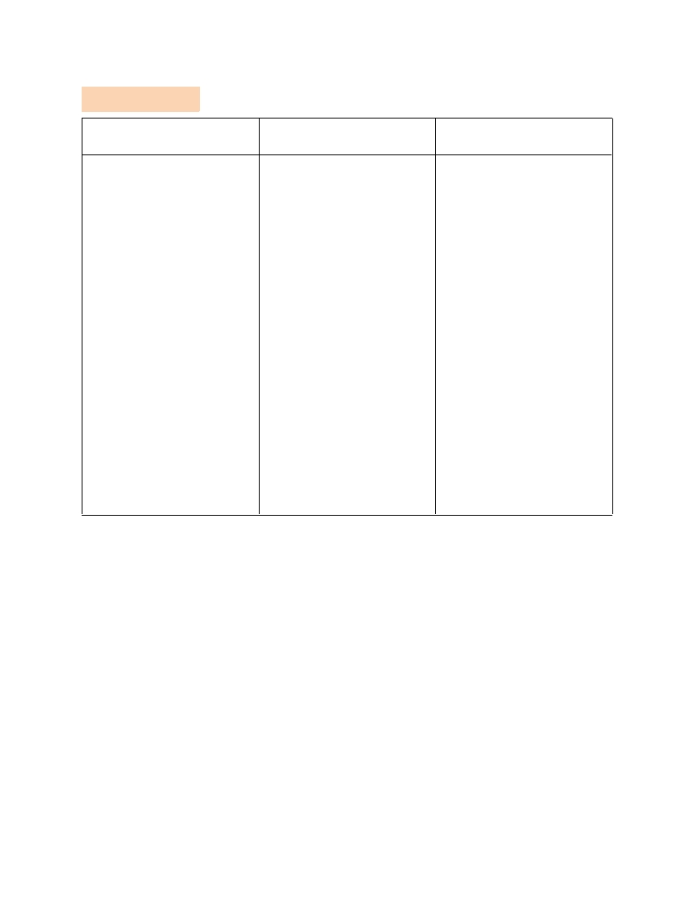

KOMFIL (Kontekstwalisadong Komunikasyon sa Filipino)
Introduksyon: Ang Pagtataguyod ng Wikang Pambansa sa Mas Mataas na
Page 1 of 6
Antas ng Edukasyon at Lagpas pa
Paksa: ANG PAGTATAGUYOD NG WIKANG PAMBANSA SA MAS MATAAS NA ANTAS NG
EDUKASYON AT LAGPAS PA
I. OBJECTIVE:
Sa pagtatapos ng aralin, ang mga mag-aaral ay inaasahang :
1.
Natatalakay ang pinagmulan ng pagkakabuo ng wikang pambansa sa mas lalong mataas na antas
nito
2.
Naihahambing ang kaibahan ng wikang Tagalog, sa wikang Filipino sa iba’t ibang gamit ng
konteksto
3.
Nakabubuo ng diskursong may kinalaman sa mga usaping pangwikadifferentiate the three inherent
II. PRELIMINARY ACTIVITY
Panuto: Ipaliwanag ang pagkakaiba ng wikang Tagalog, Pilipino at Filipino. Sagutin ang mga sumusunod
na tanong sa ibaba.
Tagalog
Pilipino
Filipino
Tanong
1. Ano ang kahulugan ng wika?
2. Ano ang kahalagahan ng pagkakaroon ng wikang pambansa?
3. Sa paanong paraan mapapaunlad at mapapanatiling buhay ang ating wika?
III. LESSON PROPER
Ano ang Wika ?
Ito ay masistemang balangkas na binibigkas na tunog . Pinipili at isinasaayos sa paraang
arbitraryo upang magamit ng mga taong may isang kultura
-
Henry Gleason
ANG PROBISYONG PANGWIKA SA SALIGANG BATAS
Saligang Batas ng Biyak na Bato (1896)- Kauna-uanahang republika na naitatag sa
Pilipinas at ang Wikang Tagalog ang magiging opisyal na wika ng Pilipinas.
Saligang Batas ng 1935- Artikulo XIII, Seksyon 3: 1935 Ang Saligang Batas
Pambansang Asemblea ay gagawa ng mga hakbang tungo sa pagpapaunlad at
pagpapatibay ng isang wikang pambansa na batay sa isa sa mga umiiral na katutubong
wika. Hanggang hindi nagtatadhana ng iba ang batas, Ingles at Kastila ay patuloy na
gagamiting opisyal.
KOMFIL (Kontekstwalisadong Komunikasyon sa Filipino)
Introduksyon: Ang Pagtataguyod ng Wikang Pambansa sa Mas Mataas na
Page 2 of 6
Antas ng Edukasyon at Lagpas pa
Saligang Batas ng 1973- Panahon ng Batas Militar , Ang batasang Pambansa ay dapat
gumaw ang ng mga hakbang tungo sa paglinag at pormal na adopsyon ng isang panlahat
na wikang pambansa na tatawaging Filipino
Saligang Batas ng 1987 –
o Seksiyon 6: Ang Wikang Pambansa ng Pilipinas ay Filipino. Samantalang
nililinang, ito ay dapat payabungin at pagyamanin pa salig sa umiiral na mga wika
ng Pilipinas at sa iba pang mga wika. Alinsunod sa mga tadhana ng batas at sang-
ayon sa nararapat na maaaring ipasya ng Kongreso, dapat magsagawa ng mga
hakbangin ang Pamahalaan upang ibunsod at puspusang itaguyod ang paggamit
ng Filipino bilang midyum ng opisyal na komunikasyon at bilang wika ng pagtuturo
sa sistemang pang-edukasyon
o Seksyon 7: Ukol sa mga layunin ng komunikasyon at pagtuturo, ang mga wikang
opisyal ng Pilipinas ay Filipino at hangga’t walang itinatadhana ang batas. Ingles.
o Seksyon 8 : Ang Konstitusyong ito ay dapat ipahayag sa
o Filipino at Ingles at dapat isalin sa mga pangunahing wikang panrehiyon Arabic at
Kastila.
o Seksyon 9: Dapat magtatag ang Kongreso ng isang Komisyon ng wikang
pambansa na binubuo ng mga kinatawan ng iba’t ibang rehiyon at mga disiplina na
magsasagawa, mag-uugnay at magtataguyod ng mga pananaliksik para sa
pagpapa-unlad, pagpapalaganap at pagpapanatili sa Filipino at iba pang mga wika.
Mula sa Bibliya Hanggang sa Modernong Panahon
- Teoryang Biblikal
- Teoryang Pilosopikal
FILIPINO: Mula sa Bibliya
Tore ng Babel
Diyos siya nilalang; nilalang niya sila na lalaki at babae”
sa ilong, at nagkaroon ito ng Buhay”
TEORYA NG WIKA
1. Teoryang Bow-wow – ang wika ay nagsimula nang
Ang ating ninuno ay natutunang manggagad o
Manggaya ng mga tunog sa kanilang kapaligiran


KOMFIL (Kontekstwalisadong Komunikasyon sa Filipino)
Introduksyon: Ang Pagtataguyod ng Wikang Pambansa sa Mas Mataas na
Page 4 of 6
Antas ng Edukasyon at Lagpas pa
8. Teoryang La-la- Nagsasaad na ang wika ay
Napaunlad mula sa mga tunog kalakip ng
Pag-ibig, paglalaro at higit sa lahat ng pag-
Await. Mga pwersang may kinalaman sa
Romansa, ang salik na nagtulak sa tao
Upang magsalita.
IV. ANALYSIS, APPLICATION, AND EXPLORATION
Panuto. Basahin at unawain mabuti ang bawat tanong. Piliin ang TAMA kung ang pahayag ay wasto at
MALI kung ang pahayag ay hindi wasto.
1. Taong 1959 ang wikang pambansa ng Pilipinas ay Filipino.
2. Ang wika ayt masistemang balangkas na binibigkas na tunog. Pinipili at isinasaayos sa paraang
arbitraryo upang magamit ng mga taong may isang kultura na mula sa pahayag ni Henry Gleason
3. Batay sa 1987, nilalaman ng seksyon 6 ang layunin ng komunikasyon at pagtuturo, ang mga wikang
opisyal ng Pilipinas ay Filipino at hangga’t walang itinatadhana ang batas. Ingles
4. Ang teoryang bow-wow ay nagsimula ng manggagad o manggaya ng tunog mula sa paligid
5. Ang wika ay arbitraryo kung kaya’t ito ay nababago.
6. Ang teoryang pooh-pooh nagpapahayag ng wika gamit ang mga labi.
7. Taong 1987, ang wikang pambansa ng Pilipinas ay Filipino
8. Ang tore ng babel ay naglalaman ng mula sa pilosopiya at pag-aaral ng tao batay sa pinagmulan ng wika.
9. Pinaniniwalaan sa teoryang ito na ang mga tao ay natutong humabi ng mga salita mula sa mga seremonya
at ritwal na kanilang ginagawa ay bahagi ng teoryang tarara-bomm-de-ay.
10. Ang wika ay daynamiko kung kaya’t ito ay nagbabago.
V. GENERALIZATION
Panuto: Sagutan ang Gawain sa Libro ng Kontekstwalisadong Komunikasyon sa Filipino Pahina 28-29 at
ipasa ito bilang kahingian ng asignatura
VI. EVALUATION
Panuto. Basahiin at unawain ang bawat tanong, Piliin ang letra ng tamang sagot..
1.
Iisang wika na sinasalita na maaaring mapagkasunduan ng nakararami.
a.
Kultura
b.
Daynamiko
c.
Arbitraryo
d.
Masistemang Balangkas

KOMFIL (Kontekstwalisadong Komunikasyon sa Filipino)
Introduksyon: Ang Pagtataguyod ng Wikang Pambansa sa Mas Mataas na
Page 5 of 6
Antas ng Edukasyon at Lagpas pa
2.
Ang wikang pambansa ng Pilipinas ay________.
a.
Filipino
b.
Pilipino
c.
Tagalog
d.
Filipinas
3.
Which of the following is not a secondary purpose of taxation?
a.
To raise revenue to defray the necessary expenses of the government.
b.
To effect a more equitable distribution of wealth among people.
c.
To achieve social and economic stability.
d.
To serve as key instrumental of social control.
4.
Konstitusyong ng 1987, na tumatalakay sa “dapat magtatag ang kongreso ng isang komisyon ng
wikang pambansa na binubuo ng mga kinatawan ng iba’t ibang rehiyon at mga disiplina na
magsasagawa at magtataguyod ng mga pananaliksik para sa pagpapaunlad, pagpapalaganap at
pagpapanatili sa Filipino at iba pang mga wika.
a.
Seksyon 6
b.
Seksyon 7
c.
Seksyon 8
d.
Seksyon 9
5.
Taon kung kailan tinawag .na tagalog ang ating wika
a.
1896
b.
1959
c.
1987
d.
2001
6.
Ahensyang binigyan ng karapatan ng saligang batas upang magsagawa ng pag-aaral, pananaliksik
at panuntunan sa paggamit ng wikang pambansa.
a.
Surian ng Wikang Pambansa
b.
Linggwistikang Wikang Pilipino
c.
Komisyon sa Wikang Filipino
d.
Komisyon sa Wikang Pambansa
7.
Pinaniniwalaan sa teoryang ito na ang mga tao ay natutong humabi ng mga salita mula sa
seremonya at ritwal na kanilang ginagawa.
a.
Teoryang tata
b.
Teoryang pooh-pooh
c.
Teoryang tarara-boom-de-ay
d.
Teoryang Lala
8.
Ang konstitusyong ito ay dapat ipahayag sa filipino at ingles at dapat isalin sa mga pangunahing
wikang panrehiyon, arabic at kastila
a.
Seksyon 9
b.
Seksyon 8
c.
Seksyon 7
d.
Seksyon 6
9.
Taon kung kailan tinawag na Pilipino ang ating wika
a. 1959
b. 1896
c. 1987
d. Exemption of government agencies and instrumentalities from taxation

KOMFIL (Kontekstwalisadong Komunikasyon sa Filipino)
Introduksyon: Ang Pagtataguyod ng Wikang Pambansa sa Mas Mataas na
Page 6 of 6
Antas ng Edukasyon at Lagpas pa
10. Siya ang nagsaad na na ang wika ay isang masistemang balangkas na binibigkas na tunog. Pinipili
at isinasaayos sa paraang arbitraryo upang magamit ng mga taong may iisang kultura.
a. Pamela Constantino
b. Bienvenido Lumbrera
c. Henry Gleason
d. Dr. Jose Rizal
11. Teorya ng wika na sinasabing nakapokus lamang sa paggalaw o kumpas ng kamay
a. Teoryang ta-ta
b. Teoryang ding-dong
c. Teoryang Yum-yum
d. Teoryang Yo-he-yo
12. Ang pagsasalita ng tao ay nabubuo sa kanyang pagtugon sa mga naririnig sa kapaligiran. Ang orihinal
na tunog ng tao ay bilang pakikipag-ugnayan sa mga nakapaligid sa kanya.
a. Teoryang pooh-pooh
b. Teoryang yum-yum
c. Teoryang ta-ta
d. Teoryang dingdong
13. Ahensiyang itinatag upang magsagawa ng paga-aaral hinggil sa mga katutubong wika
a. Surian ng wikang pambansa
b. Linggwistika ng wikangFilipino
c. Komisyon sa Wikang Filipino
d. Komisyon sa WIkang Pambansa
14. Mula sa 1987 Konstitusyon na naglalaman na Ukol sa mga layunin ng komunikasyon at pagtuturo, ang
mga wikang opisyal ng Pilipinas ay Filipino at hangga’t walang itinatadhana ang batas. Ingles
a. Seksyon 6
b. Seksyon 7
c. Seksyon 8
d. Seksyon 9
15. Ayon kay Henry Gleason ang wika ay nagbabago
a. Daynamiko
b. Sistema
c. Kultura
d. Tunog
16. Teorya ng wika na gunagamit ng pisikal na lakas na nakapagpapahayag ng kataga na pinaniniwalaan na
pinagmulan ng wika?
a. Teoryang pooh-pooh
b. Teoryang tarara-boom-de-ay
c. Teoryang Yo-he-yo
d. Teoryang Bow-wow
17. Seksyon sa 1987 konstitusyon, Ukol sa mga layunin ng komunikasyon at pagtuturo, ang mga wikang
opisyal ng Pilipinas ay Filipino at hangga’t walang itinatadhana ang batas. Ingles.
a. Seksyon 6
b. Seksyon 7
c. Seksyon 8
d. Seksyon 9
KOMFIL (Kontekstwalisadong Komunikasyon sa Filipino)
Introduksyon: Ang Pagtataguyod ng Wikang Pambansa sa Mas Mataas na
Page 7 of 6
Antas ng Edukasyon at Lagpas pa
18. Ito ay teorya ng wika na hango sa bibliya.
a. Teoryang pilosopikal
b. Teorya ng babel
c. Teoryang Bow-wow
d. Teoryang pooh-pooh
19. Taon kung kailan tinawag na Filipino ang ating wikang pambansa?
a. 1987
b. 2001
c. 1959
d. 1986
20. Ayon kay Henry Gleasin ang wika ay dumaraan sa anumang proseso.
a. Masistemang Balangkas
b. Arbitraryo
c. Daynamiko
d.Kultura
VII. ASSIGNMENT
Instruction. Basahin at unawain ang tanong, piliin ang letra ng tamang sagot.
1. Ang teoryang yum-yum ay sinasabing sumensenyas ang tao sang-ayon sa mga tunog na kanyang
sinasambit
a.
Tama
b.
Mali
2. Ang teoryang ta-ta ay nakapokus lamang sa paggalaw ng kamay o kumpas ng kamay
a.
Tama
b.
Mali
3. Pinaniniwalaan sa teoryang tarara-boom-de-ay na ang mga tao ay natutong humabi ng mga salita mula
sa mga seremonya at ritwal na kanilang ginagawa
a. Tama
b. Mali
4. Ang teoryang la-la ay nagsasaad na ang wika ay napaunlad mula sa mga tunog kalakip ng pag-ibig,
paglalaro at higit sa lahat ng pag-awit.
a. Tama
b. Mali
5. Ayon sa teoryang dingdong nanggaling sa damdamin ng tao ang anumang salitang binubulalas ng
kanyang labi.
a. Tama
b. Mali

KOMFIL (Kontekstwalisadong Komunikasyon sa Filipino)
Introduksyon: Ang Pagtataguyod ng Wikang Pambansa sa Mas Mataas na
Page 8 of 9
Antas ng Edukasyon at Lagpas pa
V. ANSWER KEY
ANALYSIS, APPLICATION,
EVALUATION
ASSIGNMENT
AND EXPLORATION
1. Mali
1. C
1. A
2. Tama
2. A
2. A
3. Mali
3. D
3. A
4. Tama
4. D
4. A
5. Mali
5. A
5. B
6. Tama
6. C
7. Tama
7. C
8. Mali
8. B
9. Tama
9. A
10. Tama
10. C
11. A
12. D
13. A
14. B
15. A
16. C
17. B
18. B
19. A
20. A